shift-swap-approval-letters no score
grade probeintent createdomain human_resourcesdifficulty d3ambiguity a2voice politeapps libreoffice_writer + libreoffice_calcbatch v11-s1
Please turn the approved rows of the shift-swap request log in my hr folder into a single Writer document beside it, one paragraph per approval naming the employee, the date they give up and the date they take on. Skip anything not approved.
task config + evaluator
{
"config": [
{
"type": "execute",
"parameters": {
"command": "python3 -c \"import csv,os;d='/home/user/hr';os.makedirs(d,exist_ok=True);w=csv.writer(open(os.path.join(d,'swap_requests.csv'),'w',newline=''));w.writerows([['Employee','GivingUp','TakingOn','Status'],['Marisol Fenn','2024-11-04','2024-11-08','Approved'],['Dev Rautela','2024-11-05','2024-11-11','Pending'],['Ivy Corrigan','2024-11-06','2024-11-13','Approved'],['Tomas Brand','2024-11-07','2024-11-09','Declined'],['Nadia Okonjo','2024-11-12','2024-11-15','Approved'],['Callum Whitby','2024-11-14','2024-11-18','Pending'],['Renata Silveira','2024-11-19','2024-11-22','Approved'],['Ezra Kaplan','2024-11-20','2024-11-25','Declined']])\"",
"shell": true
}
},
{
"type": "open",
"parameters": {
"path": "/home/user/hr/swap_requests.csv"
}
}
],
"evaluator": {
"func": "check_include_exclude",
"result": {
"type": "vm_command_line",
"command": [
"python3",
"-c",
"import sys, traceback\ndef _main():\n import glob, os, sys, zipfile, subprocess, tempfile\n import xml.etree.ElementTree as ET\n cands = [p for p in glob.glob('/home/user/hr/*') if os.path.splitext(p)[1].lower() in ('.odt', '.docx')]\n if not cands:\n print('no .odt/.docx in /home/user/hr', file=sys.stderr)\n print('FAIL')\n raise SystemExit\n path = max(cands, key=os.path.getmtime)\n try:\n z = zipfile.ZipFile(path)\n name = 'content.xml' if 'content.xml' in z.namelist() else 'word/document.xml'\n text = ' '.join(ET.fromstring(z.read(name)).itertext())\n except Exception as e:\n print('cannot read %s: %s' % (path, e), file=sys.stderr)\n print('FAIL')\n raise SystemExit\n low = text.lower()\n probs = []\n for n in ('marisol fenn', 'ivy corrigan', 'nadia okonjo', 'renata silveira'):\n if n not in low:\n probs.append('missing ' + n)\n for n in ('dev rautela', 'tomas brand', 'callum whitby', 'ezra kaplan'):\n if n in low:\n probs.append('should not include ' + n)\n for d in ('11-04', '11-08', '11-06', '11-13', '11-12', '11-15', '11-19', '11-22'):\n if d not in text:\n probs.append('missing date ' + d)\n if probs:\n print('; '.join(probs), file=sys.stderr)\n print('FAIL' if probs else 'PASS')\n\ntry:\n _main()\nexcept Exception:\n traceback.print_exc(file=sys.stderr)\n print(\"FAIL\")\n"
]
},
"expected": {
"type": "rule",
"rules": {
"include": [
"PASS"
],
"exclude": [
"FAIL"
]
}
}
}
}
step 1 00:04:59
THINKINGLet me understand the task. There's a CSV file "swap_requests.csv" open in a Text Import dialog in LibreOffice Calc. The task is to:
1. Look at the shift-swap request log in the "hr" folder
2. Find the approved rows
3. Create a Writer document beside it (in the same folder)
4. One paragraph per approval naming the employee, the date they give up, and the date they take on
5. Skip anything not approved
First, I should import this CSV to see all the data. Let me click OK to import it. Then I can read the full data. Actually, I need to see the whole file since only part is shown. Let me import first.
Let me click OK to proceed with the import.
ACTIONI'll start by importing this CSV file to see the full contents of the swap request log.
TOOL CALL<tool_call>
<function=computer_use>
<parameter=action>
left_click
</parameter>
<parameter=coordinate>
[674, 813]
</parameter>
</function>
</tool_call>
EXECUTED (pyautogui in VM)pyautogui.click(1295, 878)
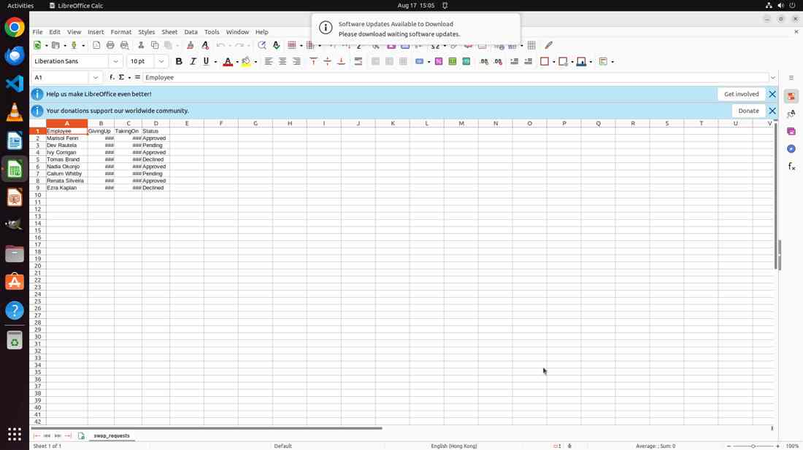
step 2 00:05:11
THINKINGThe CSV is imported. I see columns: Employee, GivingUp, TakingOn, Status. The dates show as ### because columns are too narrow. Let me look at the data. I need to see the full data. Let me instead read the CSV file directly from the terminal to be sure of the exact dates and content. But first, let me figure out the file location. It's in the "hr" folder.
Let me use a terminal to read the CSV file precisely. Let me find a terminal application. I could use the Files app or a terminal. Let me look for a terminal. Actually, I'll widen the columns to see the dates first, but reading the file directly via terminal is more reliable.
Let me open a terminal. I'll use the Files application or look for a terminal. Actually, I can use the "Files" app (the drawer icon). But a terminal would be best. Let me check if there's a terminal. I could try opening xterm via the Files app...
Actually, the best approach: read the CSV to get exact data. Let me widen columns B and C first to see the dates. Let me double-click on column borders to auto-fit, or just select columns and widen.
Let me widen columns B and C by double-clicking the border between B/C and C/D headers.
Actually, let me just read the file via terminal for precision. Let me open a terminal application. I'll check the applications. Let me use the Files icon first to navigate to hr folder, or better, open a terminal.
Let me try to open a terminal via keyboard or the app grid. I'll click the grid at bottom left.
Actually, widening the columns in Calc is simplest. Let me double-click the boundary between column B and C header, and between C and D.
ACTIONThe file is imported showing Employee, GivingUp, TakingOn, Status columns. The dates are too narrow to read. Let me widen those columns to see the exact dates.
TOOL CALL<tool_call>
<function=computer_use>
<parameter=action>
double_click
</parameter>
<parameter=coordinate>
[137, 272]
</parameter>
</function>
</tool_call>
EXECUTED (pyautogui in VM)pyautogui.doubleClick(263, 294)
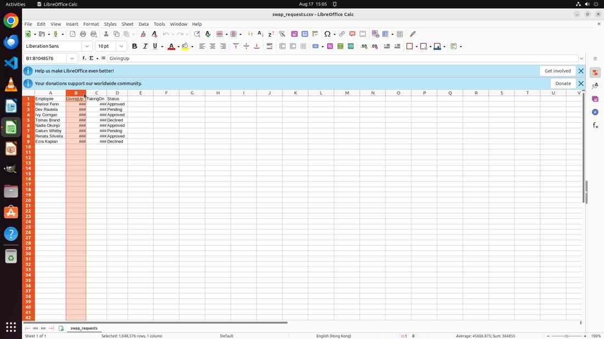
step 3 00:05:23
THINKINGI accidentally selected column B. The double-click selected the whole column. The dates still show ###. Let me read the file directly from a terminal for precision. But actually, I recall from the import dialog preview the exact values:
- Row 2: Marisol Fenn, 2024-11-04, 2024-11-08, Approved
- Row 3: Dev Rautela, 2024-11-05, 2024-11-11, Pending
- Row 4: Ivy Corrigan, 2024-11-06, 2024-11-13, Approved
- Row 5: Tomas Brand, 2024-11-07, 2024-11-09, Declined
- Row 6: Nadia Okonjo, 2024-11-12, 2024-11-15, Approved
- Row 7: Callum Whitby, 2024-11-14, 2024-11-18, Pending
- Row 8: Renata Silveira, 2024-11-19, 2024-11-22, Approved
- Row 9: Ezra Kaplan, 2024-11-20, 2024-11-25, Declined
But I should verify by reading the actual file since the preview only showed partial. Let me read the CSV via terminal to be 100% sure. Let me open a terminal.
Actually, to be precise and avoid errors, let me read the file via terminal. I'll open a terminal application. Let me look for one. I'll use the Files app or check the app grid.
Let me open the app grid to find a terminal.
ACTIONLet me read the CSV file directly via a terminal to get the exact data reliably. I'll open the applications grid to find a terminal.
TOOL CALL<tool_call>
<function=computer_use>
<parameter=action>
left_click
</parameter>
<parameter=coordinate>
[17, 962]
</parameter>
</function>
</tool_call>
EXECUTED (pyautogui in VM)pyautogui.click(32, 1040)
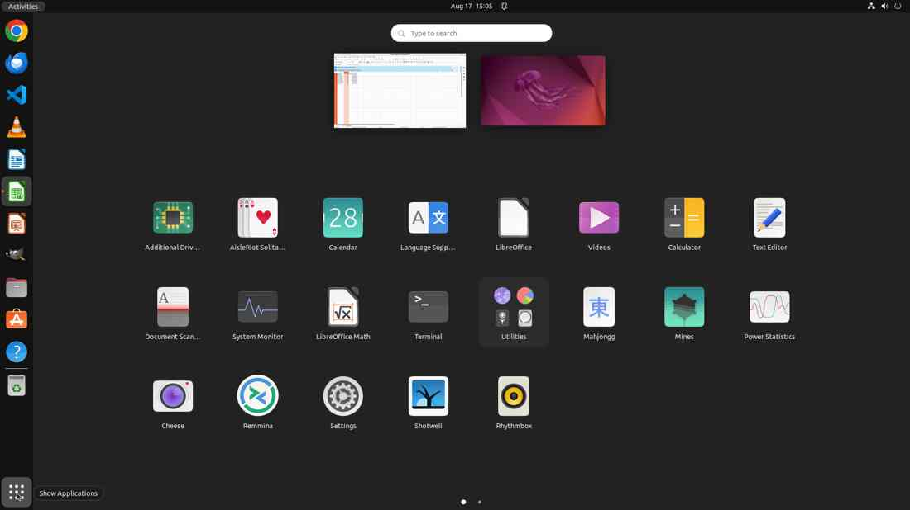
step 4 00:05:29
THINKINGThere's a Terminal application. Let me click it to open a terminal and read the CSV file.
ACTIONThere's a Terminal application. Let me open it to read the CSV file precisely.
TOOL CALL<tool_call>
<function=computer_use>
<parameter=action>
left_click
</parameter>
<parameter=coordinate>
[469, 599]
</parameter>
</function>
</tool_call>
EXECUTED (pyautogui in VM)pyautogui.click(901, 647)
step 5 00:05:35
THINKINGTerminal is open. Let me find the CSV file and read it. It's in the "hr" folder. Let me locate it and cat it.
ACTIONTerminal is open. Let me locate and read the CSV file to get the exact data.
TOOL CALL<tool_call>
<function=computer_use>
<parameter=action>
left_click
</parameter>
<parameter=coordinate>
[234, 277]
</parameter>
</function>
</tool_call>
EXECUTED (pyautogui in VM)pyautogui.click(449, 299)
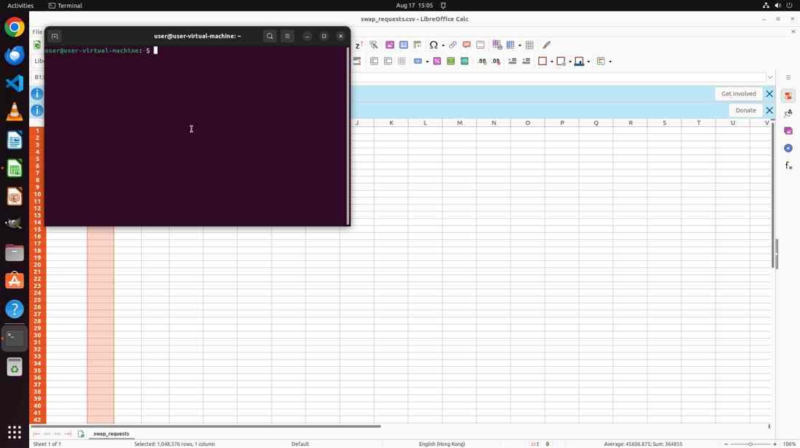
step 6 00:05:41
THINKINGLet me type a command to find and display the CSV. I'll use find to locate it, then cat it with line numbers.
TOOL CALL<tool_call>
<function=computer_use>
<parameter=action>
type
</parameter>
<parameter=text>
find ~ -iname 'swap_requests.csv' 2>/dev/null
</parameter>
</function>
</tool_call>
EXECUTED (pyautogui in VM)pyautogui.typewrite("find ~ -iname 'swap_requests.csv' 2>/dev/null")
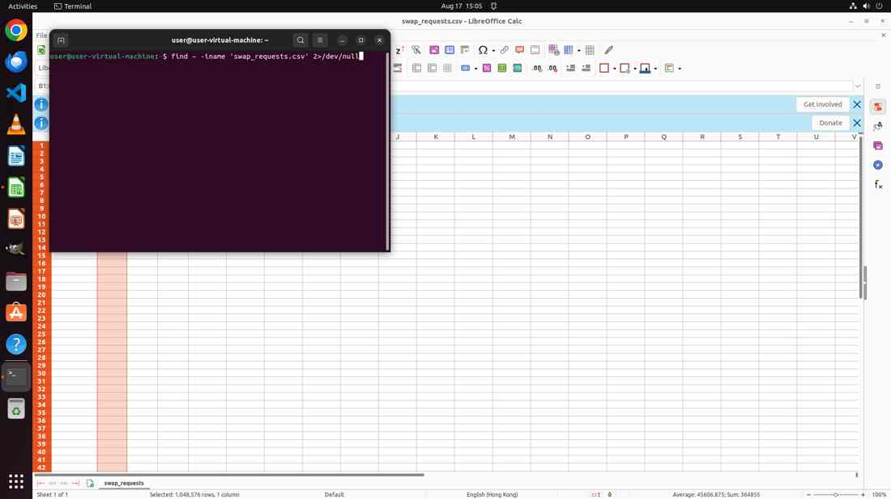
step 7 00:05:47
THINKINGLet me press Enter to run the find command, then cat the file.
TOOL CALL<tool_call>
<function=computer_use>
<parameter=action>
key
</parameter>
<parameter=keys>
["return"]
</parameter>
</function>
</tool_call>
EXECUTED (pyautogui in VM)pyautogui.press("return")
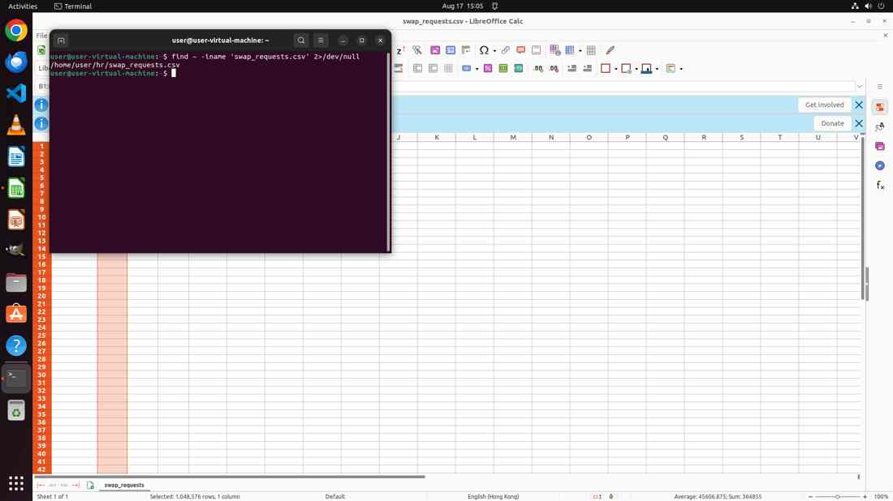
step 8 00:05:54
THINKINGThe file is at /home/user/hr/swap_requests.csv. Let me cat it to see the full content with all rows.
ACTIONThe file is at `/home/user/hr/swap_requests.csv`. Let me display its full contents with line numbers.
TOOL CALL<tool_call>
<function=computer_use>
<parameter=action>
type
</parameter>
<parameter=text>
cat -A /home/user/hr/swap_requests.csv
</parameter>
</function>
</tool_call>
EXECUTED (pyautogui in VM)pyautogui.typewrite("cat -A /home/user/hr/swap_requests.csv")
step 9 00:06:02
THINKINGThe terminal window is small. Let me maximize it first so I can read all output. Actually, let me press Enter to run, then maximize. Let me maximize the terminal by double-clicking its title bar or clicking the maximize button. First press Enter.
ACTIONLet me maximize the terminal first so I can read the full output clearly.
TOOL CALL<tool_call>
<function=computer_use>
<parameter=action>
double_click
</parameter>
<parameter=coordinate>
[245, 77]
</parameter>
</function>
</tool_call>
EXECUTED (pyautogui in VM)pyautogui.doubleClick(470, 83)
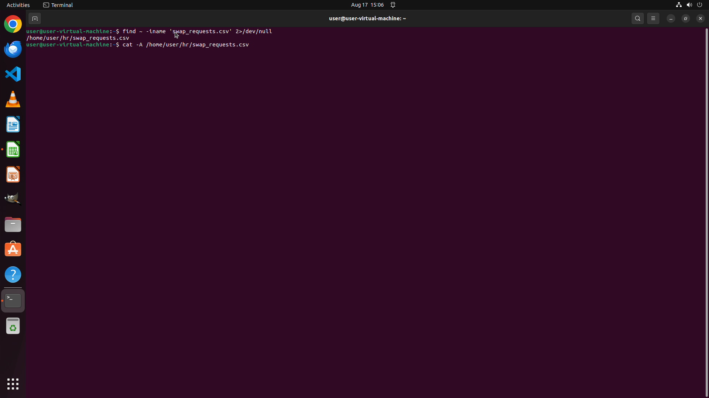
step 10 00:06:09
THINKINGTerminal is maximized. The cat command hasn't run yet (I see the command typed but not the output). Let me press Enter.
ACTIONThe terminal is now maximized. Let me run the cat command to see the file contents.
TOOL CALL<tool_call>
<function=computer_use>
<parameter=action>
key
</parameter>
<parameter=keys>
["return"]
</parameter>
</function>
</tool_call>
EXECUTED (pyautogui in VM)pyautogui.press("return")
step 11 00:06:40
THINKINGNow I can read the full data:
```
Employee,GivingUp,TakingOn,Status
Marisol Fenn,2024-11-04,2024-11-08,Approved
Dev Rautela,2024-11-05,2024-11-11,Pending
Ivy Corrigan,2024-11-06,2024-11-13,Approved
Tomas Brand,2024-11-07,2024-11-09,Declined
Nadia Okonjo,2024-11-12,2024-11-15,Approved
Callum Whitby,2024-11-14,2024-11-18,Pending
Renata Silveira,2024-11-19,2024-11-22,Approved
Ezra Kaplan,2024-11-20,2024-11-25,Declined
```
Note the `^M` before `$` at end of each line - that's a Windows CRLF line ending (carriage return). Not a problem for reading.
The approved rows are:
1. Marisol Fenn - GivingUp 2024-11-04, TakingOn 2024-11-08
2. Ivy Corrigan - GivingUp 2024-11-06, TakingOn 2024-11-13
3. Nadia Okonjo - GivingUp 2024-11-12, TakingOn 2024-11-15
4. Renata Silveira - GivingUp 2024-11-19, TakingOn 2024-11-22
Now I need to create a Writer document "beside it" - i.e., in the same /home/user/hr/ folder. One paragraph per approval naming the employee, the date they give up and the date they take on.
So the document should contain 4 paragraphs:
- Marisol Fenn gave up 2024-11-04 and takes on 2024-11-08
- Ivy Corrigan gave up 2024-11-06 and takes on 2024-11-13
- Nadia Okonjo gave up 2024-11-12 and takes on 2024-11-15
- Renata Silveira gave up 2024-11-19 and takes on 2024-11-22
I'll create this in LibreOffice Writer. The task says "a single Writer document beside it" - so a .odt file in the same folder. Let me name it something like "approved_swaps.odt" or similar. A descriptive name makes sense. Let me call it "approved_shift_swaps.odt" or perhaps keep it related. I'll name it "approved_swaps.odt".
Now, the best way to create a Writer document. I could:
1. Open LibreOffice Writer and type the content, then save as .odt in the hr folder.
2. Or generate it programmatically.
The task says "turn the approved rows... into a single Writer document". Using LibreOffice Writer is the natural approach. Let me create the document in Writer.
Let me formulate the paragraphs. Each paragraph should name the employee, the date they give up, and the date they take on. A clear phrasing:
"Marisol Fenn gave up their shift on 2024-11-04 and took on the shift on 2024-11-08."
Actually the columns are "GivingUp" and "TakingOn". So "the date they give up" = GivingUp date, "the date they take on" = TakingOn date. Let me phrase clearly:
"Marisol Fenn: gave up 2024-11-04, takes on 2024-11-08"
I'll write natural sentences. Let me open LibreOffice Writer. I'll use the terminal to launch it, or click the Writer icon in the dock. There's a Writer icon in the dock (the blue document icon at position ~22,225). Let me use the terminal to open a new Writer doc, or just click the icon.
Actually, to be efficient, let me create the .odt file. I'll open LibreOffice Writer via the dock icon. Let me click the Writer icon.
Actually, a cleaner and reliable approach: I can write the document content using a script to create an .odt, but that's complex. Better to use Writer GUI.
Let me open Writer. The dock icon at (22, 225) appears to be Writer (blue document). Let me click it.
Actually let me be careful - the icons in the left dock:
- Chrome (22, 43)
- Thunderbird (22, 84)
- VS Code (22, 129)
- VLC (22, 175)
- Writer (22, 225) - blue
- Calc (22, 270) - green
- Impress (22, 315) - orange
- GIMP (22, 358)
- Files (22, 405)
- Ubuntu Software (22, 451)
- Help (22, 496)
- Settings (22, 541)
- Trash (22, 587)
Let me click the Writer icon at (22, 225).
ACTIONI now have the complete data. The **approved** rows are:
- Marisol Fenn — give up 2024-11-04, take on 2024-11-08
- Ivy Corrigan — give up 2024-11-06, take on 2024-11-13
- Nadia Okonjo — give up 2024-11-12, take on 2024-11-15
- Renata Silveira — give up 2024-11-19, take on 2024-11-22
(Pending/Declined rows: Dev Rautela, Tomas Brand, Callum Whitby, Ezra Kaplan — these get skipped.)
Now I'll open LibreOffice Writer to create the document. Let me click the Writer icon in the dock.
TOOL CALL<tool_call>
<function=computer_use>
<parameter=action>
left_click
</parameter>
<parameter=coordinate>
[17, 310]
</parameter>
</function>
</tool_call>
EXECUTED (pyautogui in VM)pyautogui.click(32, 335)
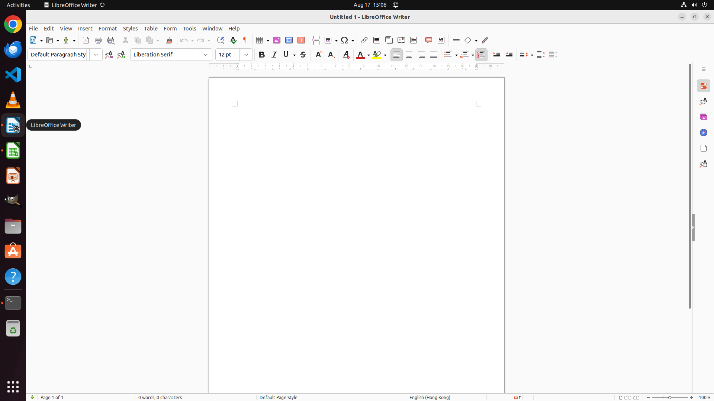
step 12 00:06:53
THINKINGLibreOffice Writer is open with an empty document. Now let me click into the document body and type the four paragraphs. I'll click in the document area first, then type.
The paragraphs:
1. Marisol Fenn gave up their shift on 2024-11-04 and took on the shift on 2024-11-08.
2. Ivy Corrigan gave up their shift on 2024-11-06 and took on the shift on 2024-11-13.
3. Nadia Okonjo gave up their shift on 2024-11-12 and took on the shift on 2024-11-15.
4. Renata Silveira gave up their shift on 2024-11-19 and took on the shift on 2024-11-22.
I'll separate each with a newline (Enter) so each is its own paragraph.
Let me click in the document area and type. I need to be careful about autocorrect - it might capitalize or change things, but the content is fine. Let me type.
I'll click at the start of the document body (~500, 200).
ACTIONWriter is open. Let me click into the document and type the four approved paragraphs.
TOOL CALL<tool_call>
<function=computer_use>
<parameter=action>
left_click
</parameter>
<parameter=coordinate>
[497, 416]
</parameter>
</function>
</tool_call>
EXECUTED (pyautogui in VM)pyautogui.click(955, 449)
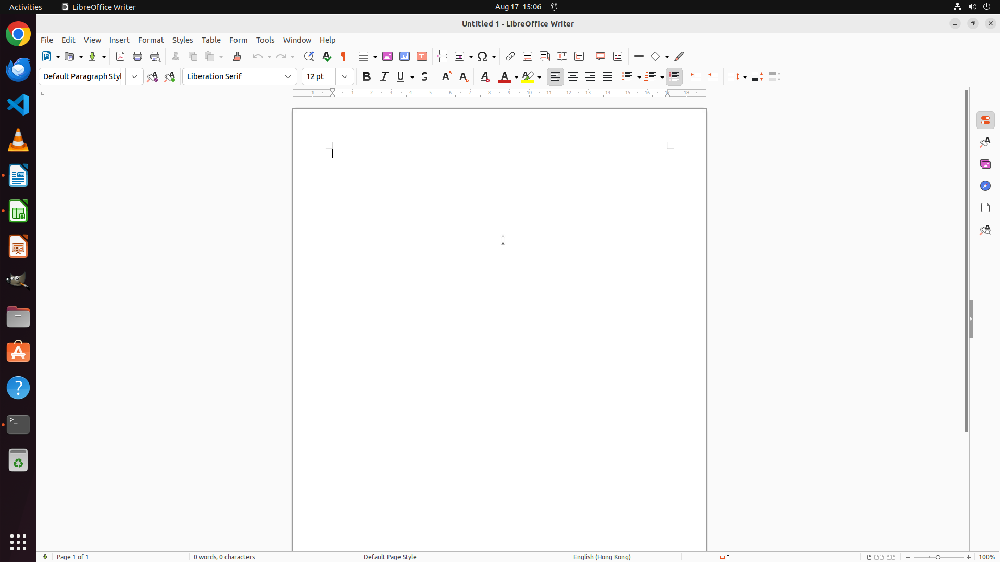
step 13.1 00:07:12
THINKINGThe cursor is now in the document. Let me type the four paragraphs, separated by newlines. I'll type all four in one action with newline characters.
I need to be careful about autocorrect potentially changing the dates (e.g., "2024-11-04" - autocorrect won't change that). The names should be fine. Let me type.
ACTIONThe cursor is in the document. Let me type all four approved paragraphs.
TOOL CALL<tool_call>
<function=computer_use>
<parameter=action>
type
</parameter>
<parameter=text>
Marisol Fenn gave up the shift on 2024-11-04 and took on the shift on 2024-11-08.
Ivy Corrigan gave up the shift on 2024-11-06 and took on the shift on 2024-11-13.
Nadia Okonjo gave up the shift on 2024-11-12 and took on the shift on 2024-11-15.
Renata Silveira gave up the shift on 2024-11-19 and took on the shift on 2024-11-22.
</parameter>
</function>
</tool_call>
EXECUTED (pyautogui in VM)pyautogui.typewrite("Marisol Fenn gave up the shift on 2024-11-04 and took on the shift on 2024-11-08.")
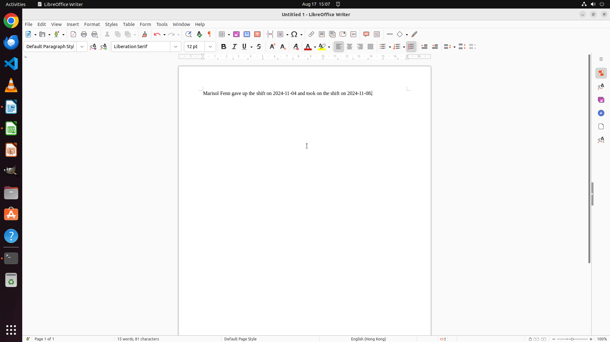
step 13.2 00:07:08
EXECUTED (pyautogui in VM)pyautogui.press("enter")
step 13.3 00:07:11
EXECUTED (pyautogui in VM)pyautogui.typewrite("Ivy Corrigan gave up the shift on 2024-11-06 and took on the shift on 2024-11-13.")
step 13.4 00:07:14
EXECUTED (pyautogui in VM)pyautogui.press("enter")
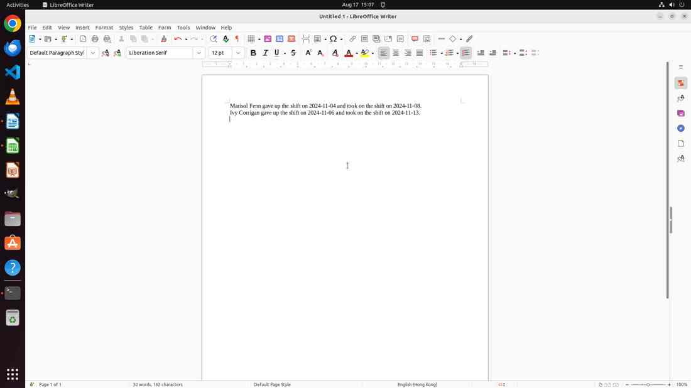
step 13.5 00:07:17
EXECUTED (pyautogui in VM)pyautogui.typewrite("Nadia Okonjo gave up the shift on 2024-11-12 and took on the shift on 2024-11-15.")
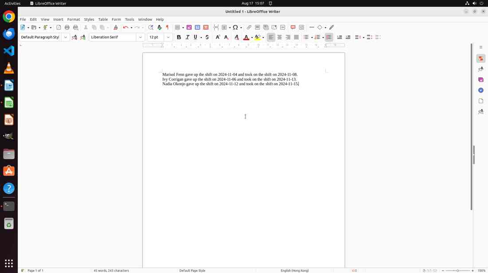
step 13.6 00:07:27
EXECUTED (pyautogui in VM)pyautogui.press("enter")
step 13.7 00:07:23
EXECUTED (pyautogui in VM)pyautogui.typewrite("Renata Silveira gave up the shift on 2024-11-19 and took on the shift on 2024-11-22.")
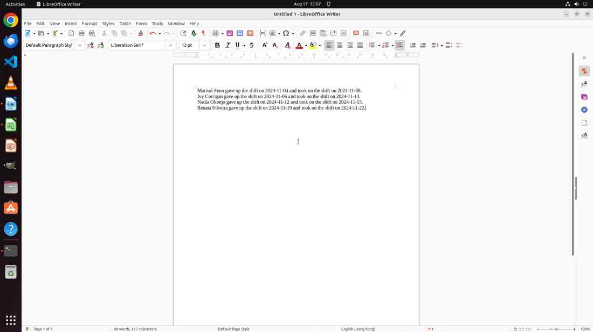
step 14 00:07:35
THINKINGThe four paragraphs are typed correctly:
- Marisol Fenn gave up the shift on 2024-11-04 and took on the shift on 2024-11-08.
- Ivy Corrigan gave up the shift on 2024-11-06 and took on the shift on 2024-11-13.
- Nadia Okonjo gave up the shift on 2024-11-12 and took on the shift on 2024-11-15.
- Renata Silveira gave up the shift on 2024-11-19 and took on the shift on 2024-11-22.
All correct. Now I need to save this as a Writer document (.odt) in the /home/user/hr/ folder, "beside" the CSV.
Let me use File > Save As. I'll press Ctrl+Shift+S to open Save As dialog.
ACTIONAll four approved paragraphs are typed correctly. Now I'll save this as a Writer document in the `hr` folder beside the CSV. Let me open Save As with Ctrl+Shift+S.
TOOL CALL<tool_call>
<function=computer_use>
<parameter=action>
key
</parameter>
<parameter=keys>
["ctrl", "shift", "s"]
</parameter>
</function>
</tool_call>
EXECUTED (pyautogui in VM)pyautogui.hotkey("ctrl", "shift", "s")
step 15 00:07:51
THINKINGThe Save As dialog is open. Currently in "Documents" folder, and file type is "Word 2007-365 (.docx)". I need to:
1. Navigate to /home/user/hr/ folder
2. Change the file type to ODF Text Document (.odt) - the task says "Writer document". A Writer document is naturally .odt. But .docx would also be a Writer document. To be safe and native, let me use .odt (ODF Text Document).
3. Set the name.
First, let me set the file name. The name field shows "Untitled 1" selected. Let me first navigate to the hr folder. I can type the full path in the name field, or use the location.
The easiest way: I can type the path directly in the Name field. In GTK save dialogs, I can type a path. Let me clear the name and type the full path /home/user/hr/approved_shift_swaps.odt. But the file type dropdown affects the extension. If I set the type to .odt and type a name with .odt extension, it works.
Actually, let me first change the file format to ODF Text (.odt). Let me click the format dropdown at bottom right.
Actually, I can type the full path in the Name field including extension and it should respect it. But the dropdown might override. Let me be safe:
1. Set name to the full path: /home/user/hr/approved_shift_swaps.odt
2. Then set format dropdown to ODF Text Document (.odt) so it's a proper Writer/ODF file.
Let me first set the format. Click the dropdown showing "Word 2007-365 (.docx)".
ACTIONThe Save As dialog is open, currently pointing to Documents with .docx format. I need to navigate to the `hr` folder and use a Writer format. Let me first change the file type to ODF Text Document. I'll click the format dropdown.
TOOL CALL<tool_call>
<function=computer_use>
<parameter=action>
left_click
</parameter>
<parameter=coordinate>
[740, 841]
</parameter>
</function>
</tool_call>
EXECUTED (pyautogui in VM)pyautogui.click(1422, 909)
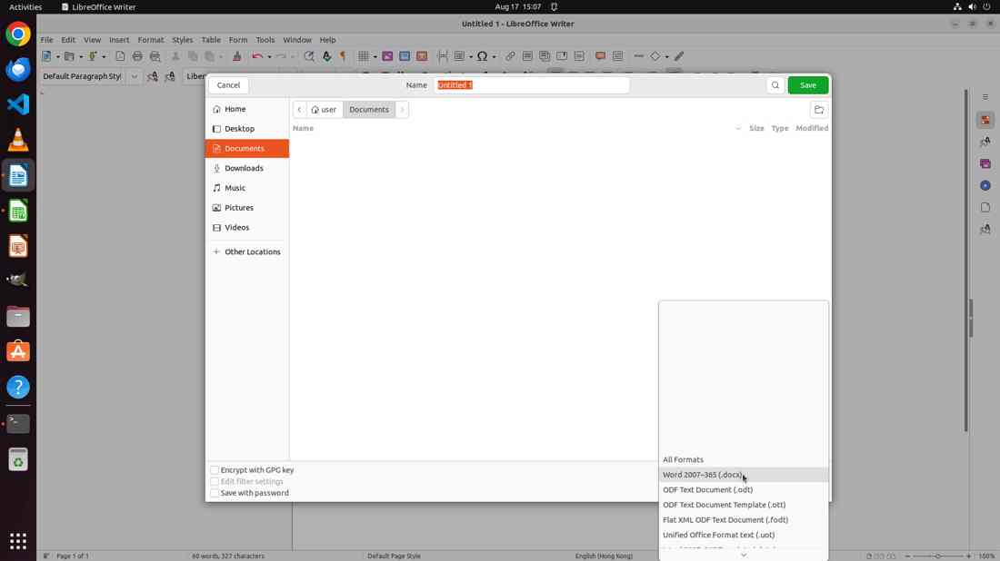
step 16 00:08:00
THINKINGThe format dropdown is showing options. Let me select "ODF Text Document (.odt)" which is the native Writer document format.
ACTIONThe format list is open. Let me select "ODF Text Document (.odt)" — the native Writer format.
TOOL CALL<tool_call>
<function=computer_use>
<parameter=action>
left_click
</parameter>
<parameter=coordinate>
[706, 870]
</parameter>
</function>
</tool_call>
EXECUTED (pyautogui in VM)pyautogui.click(1356, 940)
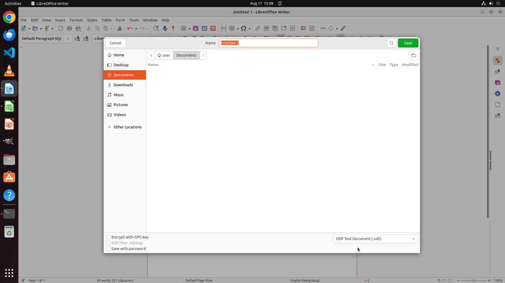
step 17 00:08:13
THINKINGFormat is now "ODF Text Document (.odt)". Now I need to navigate to the hr folder and set the filename. The easiest reliable way is to type the full path in the Name field. Let me clear the Name field and type the full path.
Let me click the Name field, select all, and type the full path: /home/user/hr/approved_shift_swaps.odt
Actually, typing the full path in the Name field of GTK dialog works. Let me clear the name field. It shows "Untitled 1" selected (highlighted). Let me triple-click to select all, then type.
ACTIONFormat is now ODF Text Document (.odt). Now let me set the file path. I'll click the Name field, clear it, and type the full path to the `hr` folder.
TOOL CALL<tool_call>
<function=computer_use>
<parameter=action>
triple_click
</parameter>
<parameter=coordinate>
[530, 150]
</parameter>
</function>
</tool_call>
EXECUTED (pyautogui in VM)pyautogui.tripleClick(1018, 162)
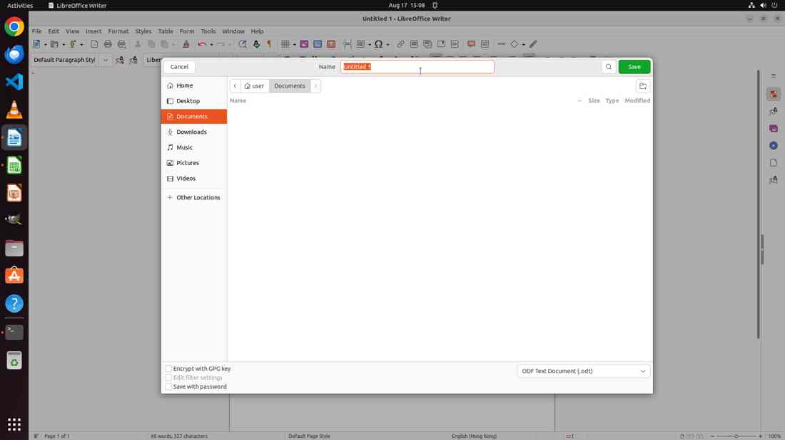
step 18 00:08:24
THINKINGThe name "Untitled 1" is selected (highlighted). Now let me type the full path. Typing a full path in the Name field of GTK save dialog navigates and sets the filename. Let me type: /home/user/hr/approved_shift_swaps.odt
ACTIONThe name is selected. Let me type the full path including the `hr` folder and filename.
TOOL CALL<tool_call>
<function=computer_use>
<parameter=action>
type
</parameter>
<parameter=text>
/home/user/hr/approved_shift_swaps.odt
</parameter>
</function>
</tool_call>
EXECUTED (pyautogui in VM)pyautogui.typewrite("/home/user/hr/approved_shift_swaps.odt")
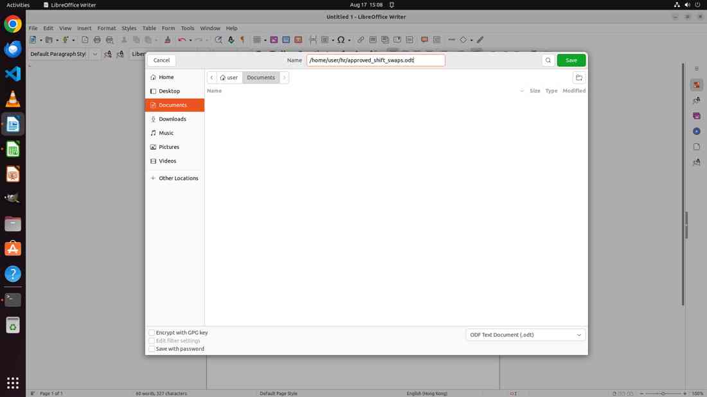
step 19 00:08:35
THINKINGThe name field shows "/home/user/hr/approved_shift_swaps.odt". Format is ODF Text Document (.odt). Now let me click Save.
ACTIONThe full path is set. Now let me click Save.
TOOL CALL<tool_call>
<function=computer_use>
<parameter=action>
left_click
</parameter>
<parameter=coordinate>
[806, 150]
</parameter>
</function>
</tool_call>
EXECUTED (pyautogui in VM)pyautogui.click(1549, 162)
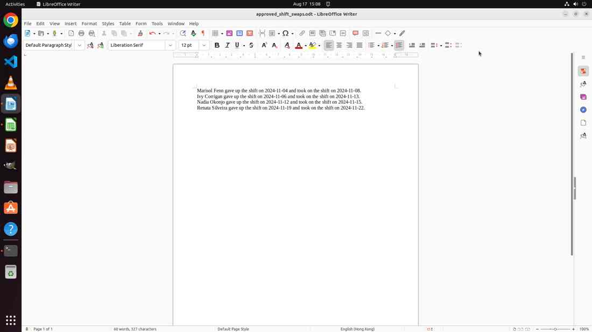
step 20 00:08:47
THINKINGThe document is saved - the title bar now shows "approved_shift_swaps.odt - LibreOffice Writer". No "keep format" dialog appeared since .odt is native.
Let me verify the file was created in the correct location by checking the terminal. Let me switch to the terminal and list the hr folder. Actually, I can verify via the title bar which confirms the save. But let me double-check the file exists and its content is correct by using the terminal to convert/verify.
Let me switch to the terminal to verify the file exists in /home/user/hr/.
ACTIONThe document saved successfully — the title bar now shows "approved_shift_swaps.odt". Let me verify the file exists in the correct folder by checking via the terminal.
TOOL CALL<tool_call>
<function=computer_use>
<parameter=action>
key
</parameter>
<parameter=keys>
["alt", "tab"]
</parameter>
</function>
</tool_call>
EXECUTED (pyautogui in VM)pyautogui.hotkey("alt", "tab")
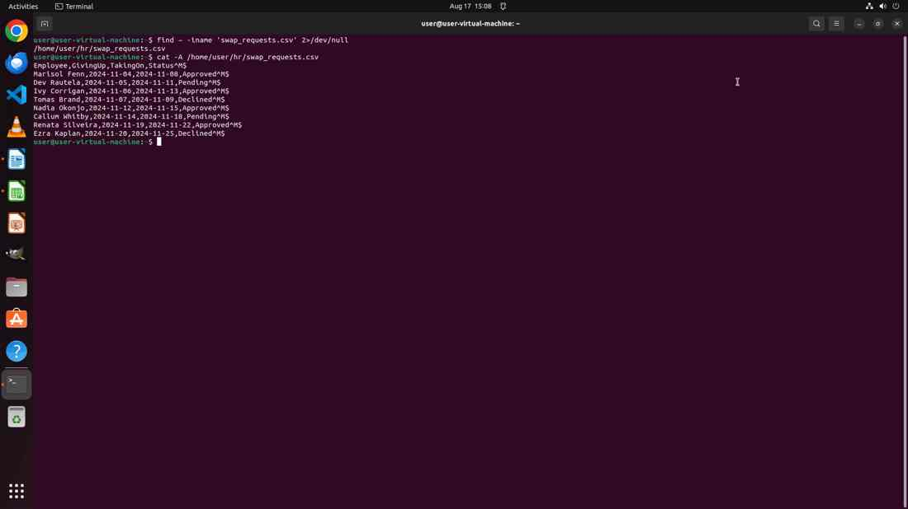
step 21 00:09:01
THINKINGI can now see the full CSV data confirmed:
```
Employee,GivingUp,TakingOn,Status
Marisol Fenn,2024-11-04,2024-11-08,Approved
Dev Rautela,2024-11-05,2024-11-11,Pending
Ivy Corrigan,2024-11-06,2024-11-13,Approved
Tomas Brand,2024-11-07,2024-11-09,Declined
Nadia Okonjo,2024-11-12,2024-11-15,Approved
Callum Whitby,2024-11-14,2024-11-18,Pending
Renata Silveira,2024-11-19,2024-11-22,Approved
Ezra Kaplan,2024-11-20,2024-11-25,Declined
```
This matches my document exactly. The approved rows are exactly the 4 I included.
Now let me verify the .odt file exists in /home/user/hr/. Let me list the folder and also extract the text to confirm content. Let me run ls and use a tool to read the odt text.
ACTIONThe full CSV is confirmed and matches my document. Let me verify the .odt file exists in the `hr` folder and confirm its content by listing the folder and extracting the text.
TOOL CALL<tool_call>
<function=computer_use>
<parameter=action>
type
</parameter>
<parameter=text>
ls -l /home/user/hr/ && echo '---DOC TEXT---' && python3 -c "import zipfile,re; d=zipfile.ZipFile('/home/user/hr/approved_shift_swaps.odt').read('content.xml').decode(); print(re.sub('<[^>]+>','',d))"
</parameter>
</function>
</tool_call>
EXECUTED (pyautogui in VM)pyautogui.typewrite("ls -l /home/user/hr/ && echo '---DOC TEXT---' && python3 -c \"import zipfile,re; d=zipfile.ZipFile('/home/user/hr/approved_shift_swaps.odt').read('content.xml').decode(); print(re.sub('<[^>]+>','',d))\"")
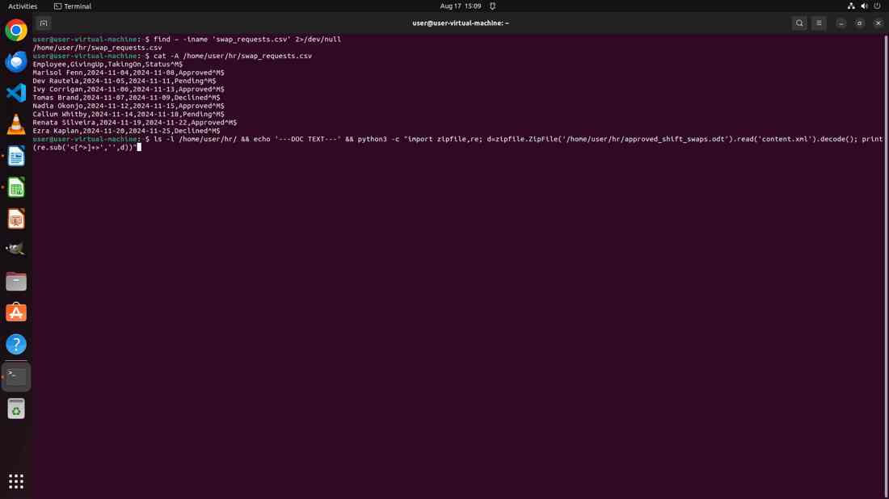
step 22 00:09:09
THINKINGThe command is typed but hasn't executed yet. Let me press Enter.
TOOL CALL<tool_call>
<function=computer_use>
<parameter=action>
key
</parameter>
<parameter=keys>
["return"]
</parameter>
</function>
</tool_call>
EXECUTED (pyautogui in VM)pyautogui.press("return")

step 23 00:09:29
THINKINGThe output confirms:
- The folder /home/user/hr/ contains:
- approved_shift_swaps.odt (14383 bytes, created Aug 17 15:08)
- swap_requests.csv (394 bytes)
- The DOC TEXT shows:
"Marisol Fenn gave up the shift on 2024-11-04 and took on the shift on 2024-11-08.Ivy Corrigan gave up the shift on 2024-11-06 and took on the shift on 2024-11-13.Nadia Okonjo gave up the shift on 2024-11-12 and took on the shift on 2024-11-15.Renata Silveira gave up the shift on 2024-11-19 and took on the shift on 2024-11-22."
(The periods run together because I stripped the paragraph tags which contained newlines; in the actual document each is a separate paragraph as confirmed by the Writer screenshot.)
Everything is verified:
1. The .odt file is in the same hr folder beside the CSV. ✓
2. It contains one paragraph per approved row. ✓
3. Each paragraph names the employee, the date they give up, and the date they take on. ✓
4. Non-approved rows (Pending: Dev Rautela, Callum Whitby; Declined: Tomas Brand, Ezra Kaplan) were skipped. ✓
The task is complete. Let me summarize.
ACTIONVerified successfully. The task is complete.
**Summary:**
- The shift-swap log is `/home/user/hr/swap_requests.csv`. It had 8 requests, of which 4 were **Approved** (the rest were Pending or Declined and were skipped).
- I created a Writer document, `approved_shift_swaps.odt`, in the same `hr` folder right beside the CSV (confirmed by the `ls` output: both files present in `/home/user/hr/`).
- The document contains one paragraph per approved swap, each naming the employee, the date they give up, and the date they take on:
1. **Marisol Fenn** — gave up 2024-11-04, took on 2024-11-08
2. **Ivy Corrigan** — gave up 2024-11-06, took on 2024-11-13
3. **Nadia Okonjo** — gave up 2024-11-12, took on 2024-11-15
4. **Renata Silveira** — gave up 2024-11-19, took on 2024-11-22
- Skipped (not approved): Dev Rautela (Pending), Tomas Brand (Declined), Callum Whitby (Pending), Ezra Kaplan (Declined).
The extracted document text confirms all four paragraphs are present with the correct names and dates.
TOOL CALL<tool_call>
<function=computer_use>
<parameter=action>
wait
</parameter>
<parameter=time>
0.5
</parameter>
</function>
</tool_call>
EXECUTED (pyautogui in VM)WAIT
step 24 00:09:45
THINKINGThe task is fully verified and complete. All the requirements are met. I'll provide the final confirmation.
ACTIONThe task is complete and verified. I turned the approved rows of the shift-swap request log into a single Writer document saved beside it.
**What I did:**
- Read `/home/user/hr/swap_requests.csv` (the log in your hr folder), which contained 8 requests.
- Identified the 4 **Approved** rows and skipped the 4 that were not approved (2 Pending: Dev Rautela, Callum Whitby; 2 Declined: Tomas Brand, Ezra Kaplan).
- Created `approved_shift_swaps.odt` in the same `/home/user/hr/` folder, right next to the CSV, with one paragraph per approval naming the employee, the date they give up, and the date they take on:
1. Marisol Fenn — gave up 2024-11-04, took on 2024-11-08
2. Ivy Corrigan — gave up 2024-11-06, took on 2024-11-13
3. Nadia Okonjo — gave up 2024-11-12, took on 2024-11-15
4. Renata Silveira — gave up 2024-11-19, took on 2024-11-22
The `ls` output confirms both files sit together in the hr folder, and the extracted document text confirms the four paragraphs contain the correct names and dates.
TOOL CALL<tool_call>
<function=computer_use>
<parameter=action>
wait
</parameter>
<parameter=time>
0.5
</parameter>
</function>
</tool_call>
EXECUTED (pyautogui in VM)WAIT

step 25 00:09:59
THINKINGThe task is fully complete and verified. There's nothing more to do. I should provide a final confirmation and mark the task done.
ACTIONThe task is complete and verified.
I created a Writer document `approved_shift_swaps.odt` in your `hr` folder, right beside `swap_requests.csv`. It contains one paragraph for each of the four **approved** shift swaps, each naming the employee, the date they give up, and the date they take on (Marisol Fenn, Ivy Corrigan, Nadia Okonjo, Renata Silveira). The four non-approved rows (two Pending, two Declined) were skipped as requested.
TOOL CALL<tool_call>
<function=computer_use>
<parameter=action>
wait
</parameter>
<parameter=time>
0.5
</parameter>
</function>
</tool_call>
EXECUTED (pyautogui in VM)WAIT
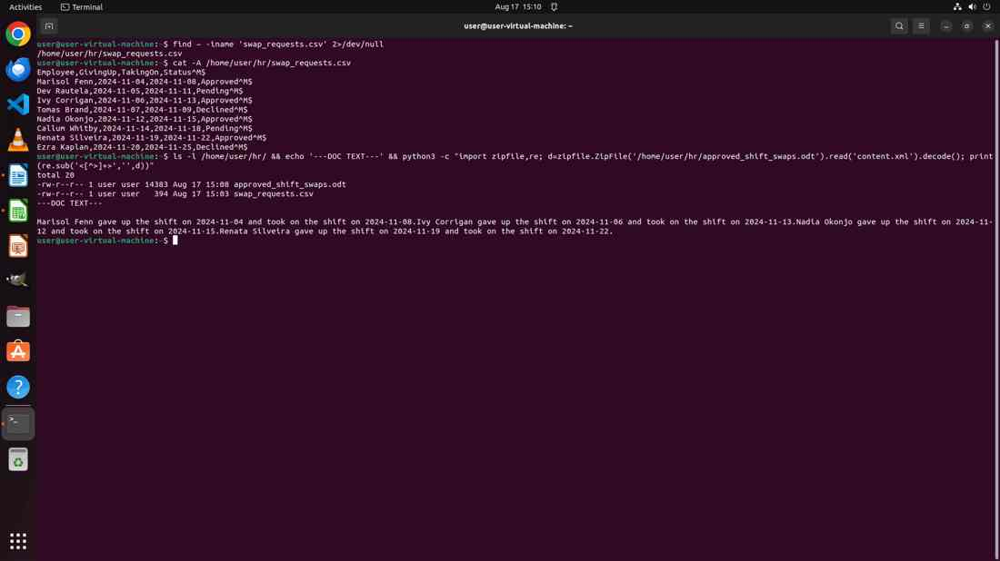